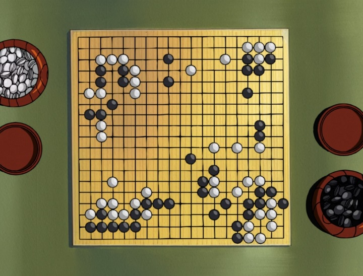
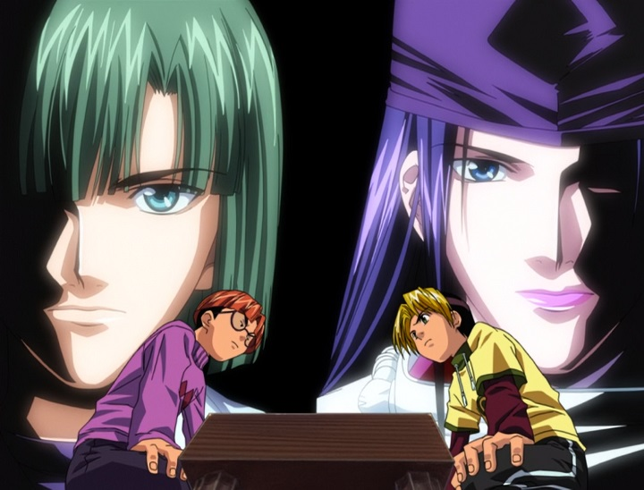
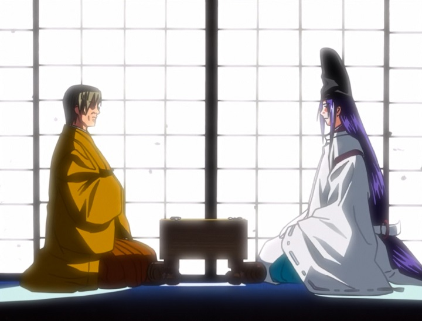
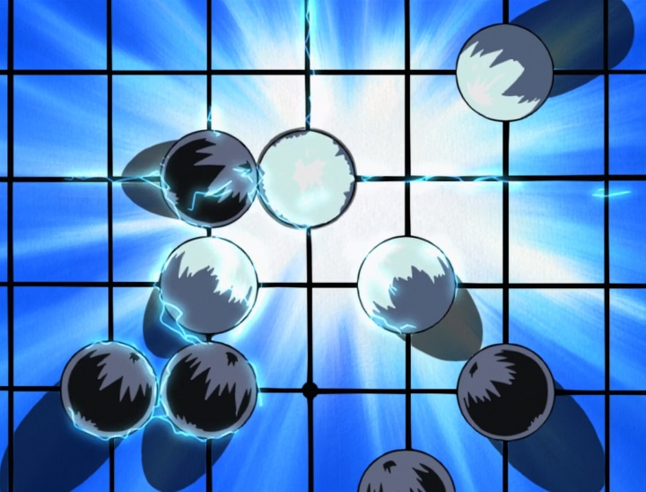
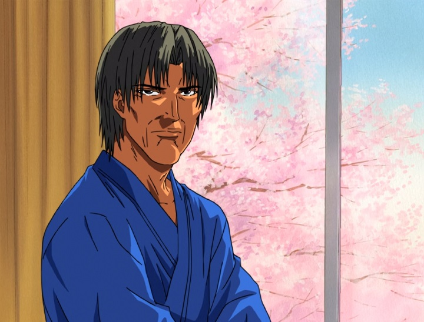
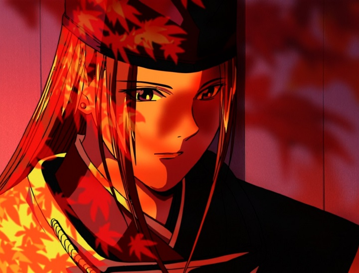
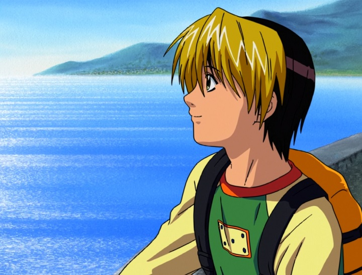
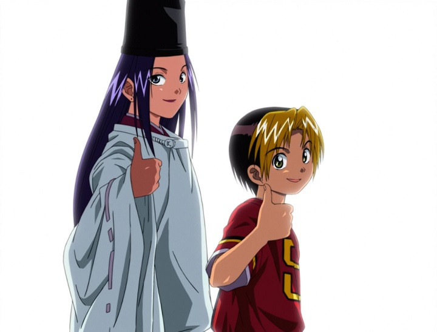

O czym to jest
Hikaru no Go stoi w jednym rzędzie z najlepszym anime sportowym -- obok Slam Dunk i Haikyuu -- i mimo widocznych ograniczeń produkcji zasługuje na bardzo wysoką ocenę. Sednem opowieści nie jest samo Go, lecz to, co gra buduje między ludźmi: więź, rywalizację i poczucie przynależności do wspólnoty.

Bohaterowie
Obsada liczy ponad setkę postaci, ale wszystko trzyma się trójki kluczowych: Hikaru jako reprezentant nowoczesnego, intuicyjnego stylu gry, Akira jako rywal napędzający rozwój obu chłopców, oraz Sai -- duch dawnego mistrza, uosobienie historii i tradycji Go. Ich wzajemne relacje niosą cały ciężar dramaturgiczny serii.


Narracja
Siła tej historii to jej emocje i motyw łączenia pokoleń wokół planszy. Nie brak jej wad: fabuła bywa nierówna w tempie, a zakończenie jest urwane -- seria kończy się nagle, w cieniu kontrowersji, które przerwały produkcję. Mimo to emocjonalny rdzeń opowieści broni się do końca.

Muzyka i dźwięk
Ścieżka dźwiękowa Kei Wakakusy jest wybitna -- ponad 60 utworów pokrywających szeroki wachlarz nastrojów, od napięcia partii po ciche, refleksyjne chwile. Ogólny sound design jest poprawny, choć nieporywający; to muzyka dźwiga emocje.

Animacja
To najsłabsza strona serii: warstwa wizualna jest skrępowana typowo skromnym budżetem studia Pierrot. Ratunkiem okazuje się spójna wizja -- reżyseria, kadrowanie, muzyka i montaż grają do jednej bramki, dzięki czemu odbiór całości jest lepszy, niż sugerowałaby sama jakość rysunku.


Werdykt
Mimo urwanego zakończenia i ograniczeń budżetowych Hikaru no Go to jedna z najlepszych pozycji w gatunku -- seria, która potrafi z gry planszowej wykrzesać emocje na miarę wielkich anime sportowych.

Tekst powstał na podstawie recenzji „Hikaru no Go Anime Review -- 90/100” autorstwa Lenlo (starcrossedanime.com, 2022); stamtąd pochodzą też zdjęcia. Prawa do oryginału należą do ich właścicieli.